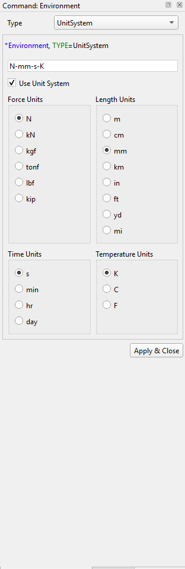
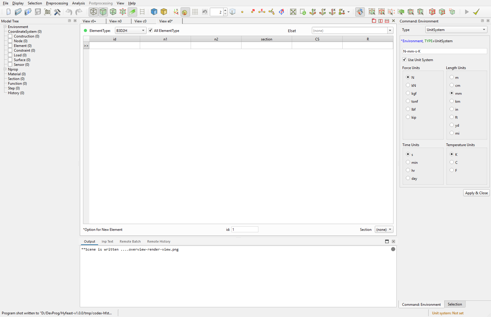

2.5 Preprocessing
전처리 모드에서 모델을 정의하고 편집할 때 쓰는 메뉴와 dock 위젯을 정리한다.
자동화: Remote Control Preprocessing 2.7.x.

Command Panel은 전처리 명령의 실제 입력 영역이다. Preprocessing 메뉴에서 항목을 고르면 오른쪽 dock에 해당 definition/edit 위젯이 열리고, Apply는 같은 canonical Remote Control tail을 history와 *.ipc.txt에 기록한다.


Node Table과 Element Table은 중앙 view로 열리는 표 형식 편집 화면이다. 메뉴 명령과 같은 모델 데이터를 다루며, 행 편집과 삭제 결과도 동일한 Remote Control 규칙을 따른다.
2.5.1 모드와 모델 이력
대부분의 정의/편집 명령은 전처리 모드에서만 동작한다. 후처리 모드에서도 GUI와 맞춰 다음 예외 경로는 허용된다 — environment-info set, nset, elset, step Post ..., step-delete-from ..., history PostHistory ....
undo/redo는 입력 텍스트 재해석이 아니라 세션의 in-memory model-history stack을 적용한다. 결과 JSON에는 적용 후 canUndo, canRedo가 들어 있다.
2.5.2 Definition 위젯
각 메뉴 항목은 해당 종류의 정의 dock/dialog를 연다. GUI Apply는 같은 canonical Remote Control tail을 history와 *.ipc.txt에 기록한다.
블록 텍스트를 편집하는 정의 명령은 모두 GUI Apply와 같은 본문 문법을 사용하고, 자동화에서는 --content <text> 또는 --content-file <file> 한쪽을 받는다.
- Coordinate System:
coordinatesystem,-rename,-delete,coordinatesystem-activate - Geometry:
geometry,-rename,-delete - Material:
material,-rename,-delete - Section:
section,-rename,-delete - Function:
function,-rename,-delete - Load:
load,-rename,-delete - Surface:
surface - Sensor:
sensor,-rename,-delete - NProp:
nprop - Constraint: GUI 위젯으로 정의; 자동화에서는 step 본문에 포함됨
- Step:
step,-rename,-delete,step-delete-from(후처리) - History:
history,-rename,-delete - Environment:
environment-info,environment-control(Environment) - Model:
model <type>(model generator)
coordinatesystem-activate는 render view에서 User 좌표계의 TreeMenu 체크/해제 동작을 그대로 반영한다. 이름을 주면 활성화하고 none이면 해제한다.
Function 위젯에서 Type=TimeSignal을 선택하면 DB record 선택 다이얼로그를 열 수 있다. 다이얼로그의 Add Record...는 시간이력 텍스트 또는 .npy 파일을 검사한 뒤 record name, quantity, UnitSystem, dtime, nseries, skipRows, sourceScaleFactor metadata를 받아 사용자 DB record로 등록한다.
- 등록 위치:
tools/db/timeSignal/user/catalog.yml과tools/db/timeSignal/user/files/ - TimeSignal source line에는
DB, recordName[, scaleFactor]형식으로 삽입된다 - 프로그램 업데이트나 설치 폴더 교체 전에는
tools/db/timeSignal/user/전체를 백업해 옮긴다
Signal Analysis 창
Analyze... 버튼은 현재 TimeSignal 정의를 대상으로 non-modal Signal Analysis 창을 연다. Function 위젯에서 열면 source line의 여러 series를 함께 비교하고, TimeSignal DB 다이얼로그에서 열면 선택한 DB record를 분석한다. TimeSignal 정의에는 acceleration, velocity, displacement처럼 서로 다른 quantity를 함께 넣을 수 있다.
- Time History: 원 quantity, 선택한 quantity 하나, 또는 acceleration/velocity/displacement 3-row 보기. 파생 시간이력은 표시용이며 source
TimeSignal, DB record, source file을 수정하지 않는다. - FFT: 변환 전 평균 제거 여부를 선택한다.
- Response Spectrum: damping과 period 범위를 지정하고
pSa,Sa,Sd표시값을 고른다. x축은 Period/Frequency × Linear/Log. acceleration 기준으로 계산하며, velocity·displacement source는 수치 미분해 사용하고Other/dimensionless series는 제외한다. - Statistics: source series 기준 min/max/mean/RMS와, acceleration-like quantity의 PGA, Arias Intensity, CAV.
- 그래프/데이터 export는 JKQtPlotter toolbar를 쓴다. data export는 화면 표시 데이터 기준이라 긴 시간이력은 plot decimation/envelope reduction 이후의 값이 나갈 수 있다.
파생 acceleration, velocity, displacement 시간이력은 tools/eqsig.py와 같은 수치 규칙을 사용한다. TimeSignal sample은 \(t_i=(i+1)\Delta t\) 위치의 값으로 저장되고 \(t=0\)에서는 0을 암시한다. 입력 series \(x_i\)에 대해 적분은 다음 사다리꼴 규칙을 사용한다.
미분은 다음 backward-difference 규칙을 사용한다.
이 표시 quantity 변환에는 baseline correction, drift correction, filtering, window correction을 적용하지 않는다.
FFT 탭의 Display=Amplitude와 Display=Power는 같은 변환 결과를 사용한다. 길이 \(N\), 시간 간격 \(\Delta t\)의 series에 대해 평균 제거가 켜져 있으면 먼저 다음 값을 사용한다.
평균 제거가 꺼져 있으면 \(x'_m=x_m\)이다. 그래프에 표시하는 비음수 주파수점은 다음과 같다.
Amplitude spectrum은 다음 값을 표시한다.
Power spectrum은 다음 값을 표시한다.
여기서 Power Spectrum은 amplitude를 직접 제곱한 표시값이며 power spectral density가 아니다. 따라서 주파수 간격으로 나누지 않고 window 보정도 적용하지 않는다.
2.5.3 Node 메뉴 / Node Table
Node 메뉴와 우측 Node Table 위젯은 같은 데이터를 다룬다.
- Node Create:
node <id> <x,y,z> [--nset] [--merge-node] - Node Copy (translate-copy / translate-move / rotate-copy / rotate-move) —
node-copy - Node Delete (Node Table 행 삭제) —
node-delete <ids|__selected__> - Set Nodeset:
nset <name> --content ...,-rename,-delete - Merge Node Tolerance:
merge-node-tolerance get|set <value>
Merge Node Tolerance는 세션 전역으로 공유되며 node --merge-node on, node-copy, element-extrude, element-divide에 같이 적용된다.
2.5.4 Element 메뉴 / Element Table
- Element Create:
element <type> <id> <n1,n2,...> - Element Update (Element Table 편집) —
element-update - Element Extrude (선택을 source로 translate/rotate) —
element-extrude - Element Divide (refine/topology/parametric) —
element-divide - Element Change (retype/reverse-node-order/explode) —
element-change - Element Copy:
element-extrude --remove-source off로 처리 - Element Delete (Element Table 행 삭제) —
element-delete <ids|__selected__> - Set Elementset:
elset <name> --content ...,-rename,-delete - Delete Node/Element Selection (단축) — snapshot 기반:
element-delete <ids>후node-delete <ids>순서로 기록
부분 삭제 동작: safe delete가 일부 항목을 남기면 응답은 DELETE_PARTIAL이고 requestedIds, deletedIds, remainingIds, canonical scriptTail을 반환한다. 실제 적용된 부분은 그대로 history에 기록된다.
2.5.5 Assign to Selection
Preprocessing context menu의 Assign 동작을 모은 메뉴이다. 기본 대상은 현재 element selection이며, --source <ids|__selected__>로 명시할 수 있다.
- Assign Section:
assign-section <section|none> - Assign Beam CS:
assign-beam-cs <beamcs|none> - Assign Beam End Release:
assign-beam-end-release <code|none>. code는Rx1/Ry1/Rz1/Rx2/Ry2/Rz2조합. - Assign Embedded Line Spline:
assign-embedded-line-spline <spline|none> - Assign Embedded Line Host Elset:
assign-embedded-line-host-elset <host-elset|none> - Assign MCK Element Scale Factor:
assign-mck-element-scale-factor <value>. 양의 실수 필요. - Assign MCK Element CS:
assign-mck-element-cs <ucs|none> - Assign Moving Spring Initial Position:
assign-moving-spring-initial-position <x,y> - Assign Shell Thickness, Shell Director: GUI 전용 (element 속성 편집 경로)
내부적으로는 *Distribution, TYPE=... 블록 하나를 만들어 적용하고, clear는 *Distribution, TYPE=..., Remove로 처리한다. 별도의 distribution remote command는 없다.
2.5.6 Model Generator
Model widget은 미리 정의된 형상 generator로 큰 영역 mesh를 만든다.
Block2D,Block3D— 직육면체Cylinder— 원기둥Wall— 벽체RectangularTank,CylindericalTank— 탱크CurveExtrusion— 곡선을 따라 extrudeFarField2D,FarField3D,FarField2Dx,FarField3Dx— far-field 경계
자동화: model <type> --content ....
적용 시 이미 숨겨져 있던 항목의 per-view hidden 상태는 유지하고, 새로 생성된 가시 항목을 각 view에 넣고, topology를 refresh하며 camera를 reset한다.
2.5.7 Renumbering
- Selected Nodes:
renumber selected-nodes <start-id> <prio1> <prio2> <prio3> - Selected Elements:
renumber selected-elements ... - All Nodes:
renumber all-nodes ... - All Elements:
renumber all-elements ...
세 priority 토큰은 각각 +X, -X, +Y, -Y, +Z, -Z 중 하나이고 서로 달라야 한다. 자세한 규칙은 Remote Control Renumber.
selected 모드는 비어 있지 않은 현재 selection이 필요하다.